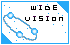

|
| バナー（HPタイトル） |
管理者(敬称略） |
主な内容 |
|
| 第３回更新分 |

ＰＳＯne |
おうみMarch |
・プレイ日記 |
| メッセージ |
主に、ＰＳＯの日記で、たまに画面写真も載せています。非常にごくまれに、私の描いたＰＳＯキャラのイラストがランダムで現れます(^^; |
|

PSO MAXIMUM |
マックス |
・プレイ日記 |
| メッセージ |
ラグオルで見かけた楽しい戦友の紹介とプレイ日記をメインに運営してます♪管理者と一緒に冒険してくださる方、ＰＳＯで愉快な活動をしている方、もちろん、通りすがりの冒険者さんのご来訪をお待ちしておりますo(^^)o |
|

Griffith's report |
Griffith |
・プレイ日記 |
| メッセージ |
オンラインにて日夜起きる愉快な出来事をリポート形式でまとめたHPです。この楽しさを知らずにいるのは勿体無い！他にも力作のシンボル紹介、濃いバトル攻略など役に立つコーナーも！PSOの楽しさをより堪能できれば幸いです。 |
|

Linx's Diary |
Linx |
・プレイ日記 |
| メッセージ |
どこにでもいるフォースのごくありふれた冒険の毎日をつづっている日記のサイトです。
Linxの日常で「くすっ」と笑っていただけたら光栄です(^^) |
|

Crazy Planet 2001 |
Sing |
・プレイ日記 |
| メッセージ |
PSOが好きすぎて作ってしまいました。プレイ日記とニューマンへの愛情と四コマ漫画などで形成されております。攻略記事は一切ございませんのでご了承下さいませ。 |
|
| メッセージ |
＠＠＠小学生の冒険仲間募集中＠＠＠
とも4年生とあつ１年生の兄弟でもぐっています。小学生による小学生のためのファンタシスターオンラインのページです。小学生でも少しだけ、おとうさんおかあさんに準備を手伝ってもらうだけで、オンラインで世界中の友達と冒険ができるんだよ。 |
|

それゆけ！リンダさん |
もじゃ |
・プレイ日記 |
| メッセージ |
１つのアイテムを目標に、取得するまでの各周回の詳細データをスナップショットを交えて掲載しています。
簡単に言えば100周企画の拡張版みたいなものですねｗ
どうぞ一度遊びに来て下さい。 |
|
WAFFLE GAME MEMO |
とびら |
・プレイ日記 |
| メッセージ |
キャプチャ画像とマンガで綴るPSO応援ページです。ラグオルで出会った方々との記念写真をご紹介する「PSOアルバム」の他、撮影会を開いてブロマイド風ページを作る「英雄写真館」、へたれ４コママンガ等がございます。お気軽に(^_^) |
|

レイキャシールはテクニックの夢を見るか？ |
さいとー しゅーぢ |
・プレイ日記
・攻略 |
| メッセージ |
当HPは日課になっているPSOのオンラインモードの活動をキャプチャ画像と拙い文章で日記にしております。他にも、PSO用語辞典、クエスト攻略、所有レアアイテム紹介、各データベースなどコンテンツの充実を図っております。気軽に見たり、参加して頂けたら幸いです。 |
|

らぴ捕獲部隊 |
NANASY
(ナナシー） |
・プレイ日記
・チーム |
| メッセージ |
「チーム紹介」や「まったりＰＳＯ日記」「武器・防具」関係を画像付きで紹介しています。息抜に「まったり」してって下さいまし。管理人が一番「まったり」してるかも？！
「ＤＣでも見やすいように」を心がけております。 |
|

ELEKI-Mare（エレキメア） |
ナギラ |
・プレイ日記 |
| メッセージ |
本来はNiGHTSのサイトですが、ほぼ毎日更新する日記はPSO関連で溢れ返っていて、概ね好評を頂いています。
他にもラッピーのコスプレやオリジナル色の強い小説など、個性の強いPSOコンテンツを用意しています。 |
|

FreeDream. |
Faith |
・プレイ日記
・攻略 |
| メッセージ |
豊富なデータ！ 的確な攻略！ 美しいCGの数々！などとはまったく無縁のただの日記サイトですが、もし来て頂ければ誠心誠意尽くさせていただきますっ。
"OnlineGame"の項目に、PSOのプレイ日記を書いています。 |
|

きすみのしるぶぷれ |
橘 葵純
(たちばな きすみ) |
・プレイ日記 |
| メッセージ |
ゲームをプレイしていて起こったこと等を赤裸々？wに記した日記メインのHPです＾＾
他にもレアを求めての森○○周といった感じの爆走記がありますw |
|

もぞもぞおりな |
朱金 折那
（あけがね おりな） |
・プレイ日記 |
| メッセージ |
他人のサポートをすることに生き甲斐を感じる人のプレイ記です。いいことも悪いこともあるけど、がんばれがんばる。そんな感じ？ |
|

さんずのおへや |
さんず |
・プレイ日記 |
| メッセージ |
PSOのプレイ日記を中心にイラストやBBSなどがあります。
BBSは楽しい交流の場として利用して頂けるとうれしいです。 |
|

ラグオル壁日記 |
zen-ichi |
・プレイ日記 |
|

EL m@riaCHI（える まりあっち） |
m@ria（まりあ） |
・プレイ日記 |
| メッセージ |
プレイ日記、駄文コラムなどのテキスト主体のサイトです。
なんだかわけのわからない文章ばかりですが、ＰＳＯに対する愛情でもって運営しております。このゲームが続く限りＧＣに移行しても継続して
応援していく予定ですのでどうか温かい目で見守ってやってください。 |
|

PSO関係 |
MACOT |
・プレイ日記 |
| メッセージ |
私MACOTが好き勝手やってます。PSO関係のHPで多分初めて音声によるネットラジオを放送しています。
今更ながらPSOの紹介など初心者向けに公開しています。玄人の方は私と一緒に冒険しましょう♪お代は掲示板に書き込みと言う事で・・・。 |
|
| メッセージ |
タラコの惑星では、新米ジャーナリスト”ベッキー”の画像リポートや、ヘッポコイラスト、チームスラレンジャーなどがあります！皆様ぜひぜひ遊びに来て下さい |
|

BluePlanet-Starlog- |
MAXX |
・プレイ日記
・イラスト |
| ッセージ |
オンラインで気の合う仲間と楽しくプレイした後は、なんとも言えぬ満足感がありますよね。ここでは、そんな思い出をデジタルな形でそっと保管しています。キャプチャ撮り込みのプレイ日記を始め、イラスト・コミック・ムービーなどほぼ毎週更新中。
PSOの世界に参加してみたいと思っている方、また既に冒険者である方も、是非お越しください。 |
|

Lavande bleu |
moris |
・プレイ日記 |
| メッセージ |
豊富なスクリーンショットで冒険の様子を紹介しています。私と一緒に冒険していただいた方々のスナップ写真も掲載。PSOが好きな方なら、見るだけでも楽しめると思います。掲示板にて感想をお待ちしてます。 |
|

WIDE VISION |
ash-k |
・プレイ日記 |
| メッセージ |
ラグオルでのお気楽な毎日を日記にしています♪まだまだできたてでいたらないところが一杯ですが、お暇ならどうぞいらっしゃってくださいｗ大歓迎しますよ〜ｗ他、写真もあります。お待ちしています〜♪ |
|
| メッセージ |
楽しくマターリを目指しています。
PSO画像日記＆ストーリィ（変〜）や、CGイラスト（センスよく〜）、初心者のための英会話講座（わかりやすく〜）などがあります。BBSやGUEST
BOOKもありますので、気軽にカキコしていって下さい ^^。（ちなみに（）は管理人の目指す希望です〜♪） |
|

LoversMoon-SIDE PSO- |
芹沢 忍 |
・プレイ日記 |
| メッセージ |
ＰＳＯのオンラインで出会った面白い出来事を、画面写真を中心に日記として公開しています。他には創作やＰＳＯのＣＧ等を主に描いたりしています。 |
|

Paulownia and the Moon |
Cian |
・プレイ日記 |
| メッセージ |
プレイヤーの性格そのままなアホーな感じのプレイ日記のほか、これだけは渾身の力作「PSOプレイヤーへの100の質問」ありまス♪お暇な方はモニターとしてご協力ください〜。 |
|